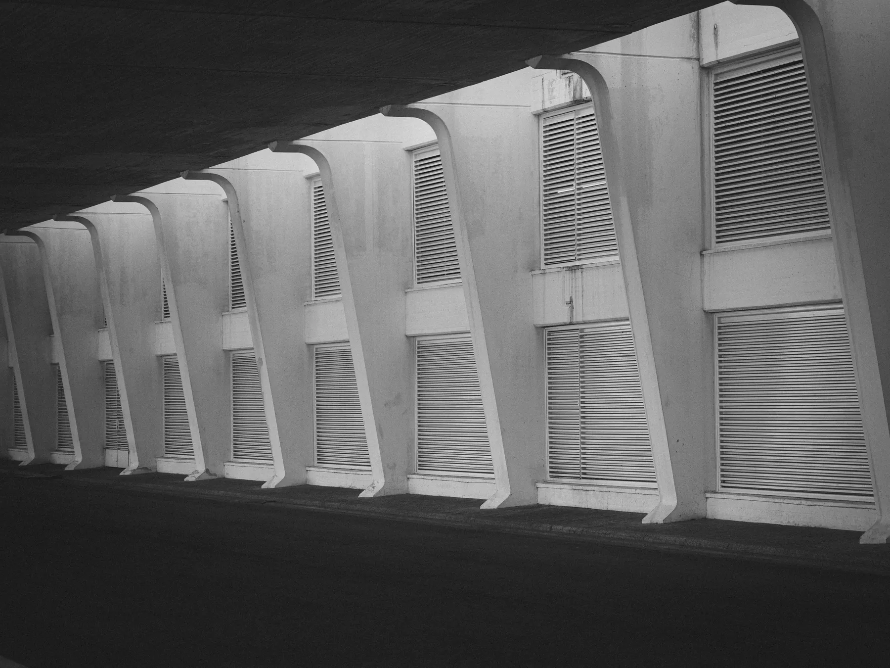

Casas que guardan la sombra.
Vivienda, patios y rehabilitación en sillar y concreto, pensados desde dónde cae el sol a las tres de la tarde.
Obras recientes
- Casa TingoSachaca2025
- Rehabilitación casona GoyenecheCercado2024–2026
- Colegio Cayma, pabellón de cienciasCayma2024
- Tambo de Yura, refugio de caminantesYura2023
- Patio de la RancheríaYanahuara2022
El taller
Somos seis personas en una casona de la calle Moral. Dibujamos a mano la primera semana de cada proyecto y maquetamos todo en cartón piedra antes de abrir el modelo digital.
Sillar
Desde 2021 medimos la temperatura interior de doce casonas del centro histórico. Un muro de sillar de 60 cm retrasa el calor de la tarde unas siete horas: la casa se entibia de noche, cuando más se necesita.
Contacto
Los jueves a las 18:30 abrimos el taller a quien quiera conversar sobre una obra. No hace falta cita; sí avisar si vienen más de tres personas. Escríbenos a taller@paralelo.pe.